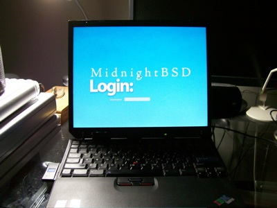
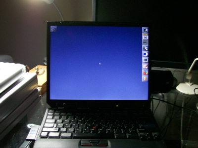

Introduction
MidnightBSD is a desktop operating system for x86 compatible (including Pentium® and Athlon™), and soon amd64 compatible (including Opteron™, Athlon™64, and EM64T) architectures. It was originally based on FreeBSD 6.1 Beta. The goal of the project is to create a BSD with ease of use and simplicity in mind.
|  | ||
|  | ||
Watch demo movie in QuickTime format.
Installing MidnightBSD videos: part 1 part 2 part 3 part 4
Download
MidnightBSD
Purchase MidnightBSD merchandise to support the project.
Track development and changes to MidnightBSD with our development blog.
View recent CVS activity through a friendly web interface. (commit logs)
We now have a Forum. You can also chat with us via IRC on FreeNode #midnightbsd.
View/Report Bugs.
View our ports with descriptions.
| Getting Source |
|---|
| CVSWeb |
| CVSup |
Security
May 2, 2007
CURRENT and STABLE both have the patch for ipv6 type 0 routing headers. The problem is that ipv6 routing headers could be run over the same link multiple times.
March 10, 2007
While many of the DST changes were imported last year, we decided to cover all cases and import
the latest tzdata2007c. Users concerned about DST changes should update their sources
and rebuild. The java ports may not have DST changes in place. We will review that issue.
Jaunary 23, 2007
A "symlink" exploit was found in the MidnightBSD jail system. A fix was made available. Please
update your /etc/rc.d/jail file from cvs. Patches will not be created until our first release.